Lecciones de circuitos eléctricos - Volumen IV
Capítulo 13
CONVERSIÓN DIGITAL-ANALOGICA
- Introduction
- The R/2nR DAC
- The R/2R DAC
- Flash ADC
- Digital ramp ADC
- Successive approximation ADC
- Tracking ADC
- Slope (integrating) ADC
- Delta-Sigma (ΔΣ) ADC
- Practical considerations of ADC circuits
Introduction
Conectar circuitos digitales a dispositivos sensores es sencillo si los dispositivos sensores son inherentemente digitales. Los interruptores, relés y codificadores se interconectan fácilmente con circuitos de compuerta debido a la naturaleza de encendido/apagado de sus señales. Sin embargo, cuando se trata de dispositivos analógicos, la interfaz se vuelve mucho más compleja. Lo que se necesita es una manera de traducir electrónicamente señales analógicas en cantidades digitales (binarias) y viceversa. Unconvertidor analógico a digital, o ADC, realiza la primera tarea mientras unconvertidor digital a analógico, o DAC, realiza lo último.
Un ADC ingresa una señal eléctrica analógica, como voltaje o corriente, y genera un número binario. En forma de diagrama de bloques, se puede representar como tal:
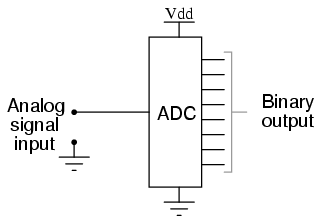
Un DAC, por otro lado, ingresa un número binario y emite una señal analógica de voltaje o corriente. En forma de diagrama de bloques, se ve así:
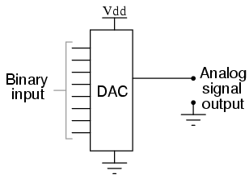
Juntos, se utilizan a menudo en sistemas digitales para proporcionar una interfaz completa con sensores analógicos y dispositivos de salida para sistemas de control como los que se utilizan en los controles de motores de automóviles:
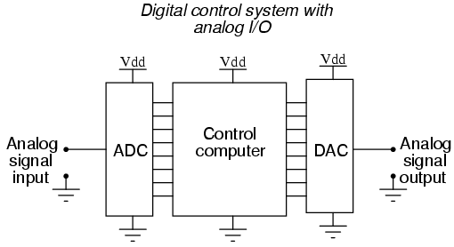
Es mucho más fácil convertir una señal digital en una señal analógica que hacer lo contrario. Por lo tanto, comenzaremos con los circuitos DAC y luego pasaremos a los circuitos ADC.
The R/2nRDAC
Este circuito DAC, también conocido comoentrada ponderada binariaDAC, es una variación del circuito inversor de amplificador operacional de verano. Si recuerda, el circuito de verano inversor clásico es un amplificador operacional que utiliza retroalimentación negativa para una ganancia controlada, con varias entradas de voltaje y una salida de voltaje. El voltaje de salida es la suma invertida (polaridad opuesta) de todos los voltajes de entrada:
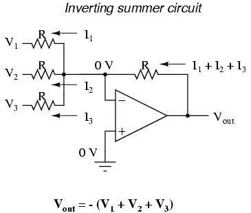
Para un circuito verano inversor simple, todas las resistencias deben tener el mismo valor. Si cualquiera de las resistencias de entrada fuera diferente, los voltajes de entrada tendrían diferentes grados de efecto en la salida y el voltaje de salida no sería una suma verdadera. Sin embargo, consideremos configurar intencionalmente las resistencias de entrada en diferentes valores. Supongamos que establecemos los valores de la resistencia de entrada en múltiples potencias de dos: R, 2R y 4R, en lugar de que todos tengan el mismo valor R:
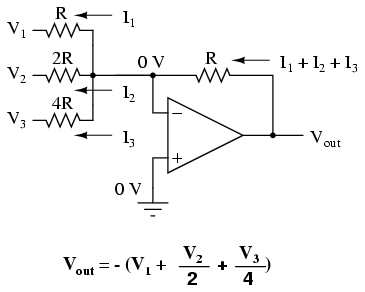
A partir de V1y pasando por V3, esto le daría a cada voltaje de entrada exactamente la mitad del efecto en la salida que el voltaje anterior. En otras palabras, el voltaje de entrada V1tiene un efecto 1:1 en el voltaje de salida (ganancia de 1), mientras que el voltaje de entrada V2tiene la mitad de ese efecto en la salida (una ganancia de 1/2), y V3la mitad de eso (una ganancia de 1/4). Estas proporciones no fueron elegidas arbitrariamente: son las mismas proporciones que corresponden a los pesos de lugar en el sistema de numeración binario. Si manejamos las entradas de este circuito con puertas digitales de modo que cada entrada sea de 0 voltios o voltaje de suministro completo, el voltaje de salida será una representación analógica del valor binario de estos tres bits.
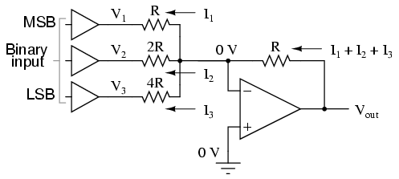
Si trazamos los voltajes de salida para las ocho combinaciones de bits binarios (000 a 111) de entrada a este circuito, obtendremos la siguiente progresión de voltajes:
--------------------------------- | Binary | Output voltage | --------------------------------- | 000 | 0.00 V | --------------------------------- | 001 | -1.25 V | --------------------------------- | 010 | -2.50 V | --------------------------------- | 011 | -3.75 V | --------------------------------- | 100 | -5.00 V | --------------------------------- | 101 | -6.25 V | --------------------------------- | 110 | -7.50 V | --------------------------------- | 111 | -8.75 V | ---------------------------------
Tenga en cuenta que con cada paso en la secuencia de conteo binario, se produce un cambio de 1,25 voltios en la salida. Este circuito es muy fácil de simular usando SPICE. En la siguiente simulación, configuré el circuito DAC con una entrada binaria de 110 (tenga en cuenta los primeros números de nodo para las resistencias R1, R2y R3: un número de nodo "1" lo conecta al lado positivo de una batería de 5 voltios y un número de nodo "0" lo conecta a tierra). El voltaje de salida aparece en el nodo 6 en la simulación:
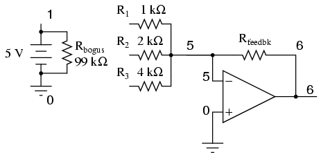
binary-weighted dac v1 1 0 dc 5 rbogus 1 0 99k r1 1 5 1k r2 1 5 2k r3 0 5 4k rfeedbk 5 6 1k e1 6 0 5 0 999k .end node voltage node voltage node voltage (1) 5.0000 (5) 0.0000 (6) -7.5000
Podemos ajustar los valores de las resistencias en este circuito para obtener voltajes de salida directamente correspondientes a la entrada binaria. Por ejemplo, al hacer que la resistencia de retroalimentación sea de 800 Ω en lugar de 1 kΩ, el DAC generará -1 voltio para la entrada binaria 001, -4 voltios para la entrada binaria 100, -7 voltios para la entrada binaria 111, y así sucesivamente.
(with feedback resistor set at 800 ohms) --------------------------------- | Binary | Output voltage | --------------------------------- | 000 | 0.00 V | --------------------------------- | 001 | -1.00 V | --------------------------------- | 010 | -2.00 V | --------------------------------- | 011 | -3.00 V | --------------------------------- | 100 | -4.00 V | --------------------------------- | 101 | -5.00 V | --------------------------------- | 110 | -6.00 V | --------------------------------- | 111 | -7.00 V | ---------------------------------
Si deseamos expandir la resolución de este DAC (agregar más bits a la entrada), todo lo que necesitamos hacer es agregar más resistencias de entrada, manteniendo la misma secuencia de valores de potencia de dos:
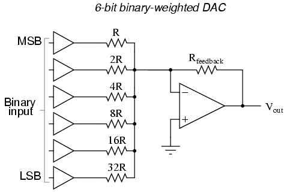
Cabe señalar que todas las puertas lógicas deben generar exactamente los mismos voltajes cuando están en el estado "alto". Si una puerta emite +5,02 voltios para un "alto" mientras que otra emite solo +4,86 voltios, la salida analógica del DAC se verá afectada negativamente. Del mismo modo, todos los niveles de voltaje "bajos" deben ser idénticos entre puertas, idealmente exactamente 0,00 voltios. Se recomienda utilizar puertas de salida CMOS y elegir valores de resistencia de entrada/retroalimentación para minimizar la cantidad de corriente que cada puerta tiene que generar o hundir.
The R/2R DAC
Una alternativa al DAC de entrada binaria ponderada es el llamado DAC R/2R, que utiliza menos valores de resistencia únicos. Una desventaja del diseño anterior del DAC era el requisito de varios valores de resistencia de entrada precisos y diferentes: un valor único por bit de entrada binaria. La fabricación puede simplificarse si hay menos valores de resistencia diferentes para comprar, almacenar y clasificar antes del ensamblaje.
Por supuesto, podríamos tomar nuestro último circuito DAC y modificarlo para usar un único valor de resistencia de entrada, conectando múltiples resistencias en serie:
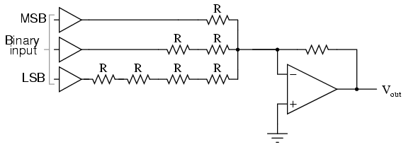
Desafortunadamente, este enfoque simplemente sustituye un tipo de complejidad por otro: volumen de componentes sobre diversidad de valores de componentes. Sin embargo, existe una metodología de diseño más eficiente.
Al construir un tipo diferente de red de resistencias en la entrada de nuestro circuito sumador, podemos lograr el mismo tipo de ponderación binaria con sólo dos tipos de valores de resistencia y con sólo un modesto aumento en el número de resistencias. Esta red "escalera" se ve así:
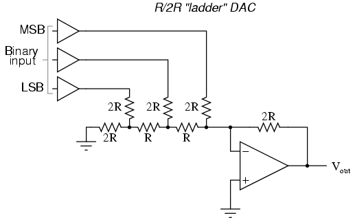
El análisis matemático de esta red en escalera es un poco más complejo que el del circuito anterior, donde cada resistencia de entrada proporcionaba una ganancia fácil de calcular para ese bit. Para aquellos que estén interesados en profundizar más en las complejidades de este circuito, pueden optar por utilizar el teorema de Thevenin para cada entrada binaria (recuerde considerar los efectos de laterreno virtual), y/o utilizar un programa de simulación como SPICE para determinar la respuesta del circuito. De cualquier manera, deberás obtener la siguiente tabla de cifras:
--------------------------------- | Binary | Output voltage | --------------------------------- | 000 | 0.00 V | --------------------------------- | 001 | -1.25 V | --------------------------------- | 010 | -2.50 V | --------------------------------- | 011 | -3.75 V | --------------------------------- | 100 | -5.00 V | --------------------------------- | 101 | -6.25 V | --------------------------------- | 110 | -7.50 V | --------------------------------- | 111 | -8.75 V | ---------------------------------
Como fue el caso con el diseño DAC ponderado binario, podemos modificar el valor de la resistencia de retroalimentación para obtener cualquier "intervalo" deseado. Por ejemplo, si usamos +5 voltios para un nivel de voltaje "alto" y 0 voltios para un nivel de voltaje "bajo", podemos obtener una salida analógica que corresponde directamente a la entrada binaria (011 = -3 voltios, 101 = -5 voltios, 111 = -7 voltios, etc.) usando una resistencia de retroalimentación con un valor de 1.6R en lugar de 2R.
Flash ADC
También llamado elparaleloConvertidor A/D, este circuito es el más sencillo de entender. Está formado por una serie de comparadores, cada uno de los cuales compara la señal de entrada con un voltaje de referencia único. Las salidas del comparador se conectan a las entradas de un circuito codificador de prioridad, que luego produce una salida binaria. La siguiente ilustración muestra un circuito ADC flash de 3 bits:
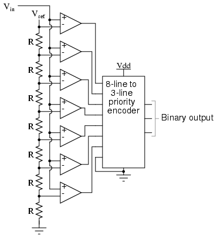
Vrefes un voltaje de referencia estable proporcionado por un regulador de voltaje de precisión como parte del circuito convertidor, que no se muestra en el esquema. A medida que el voltaje de entrada analógica excede el voltaje de referencia en cada comparador, las salidas del comparador se saturarán secuencialmente a un estado alto. El codificador de prioridad genera un número binario basado en la entrada activa de orden más alto, ignorando todas las demás entradas activas.
Cuando se utiliza, el ADC flash produce una salida similar a esta:
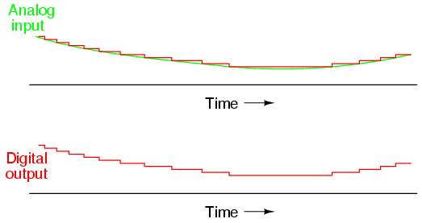
Para esta aplicación en particular, no es necesario un codificador de prioridad normal con toda su complejidad inherente. Debido a la naturaleza de los estados de salida del comparador secuencial (cada comparador satura "alto" en secuencia de menor a mayor), el mismo efecto de "selección de entrada de orden más alto" se puede lograr a través de un conjunto de puertas OR exclusivas, lo que permite el uso de un codificador más simple y sin prioridad:
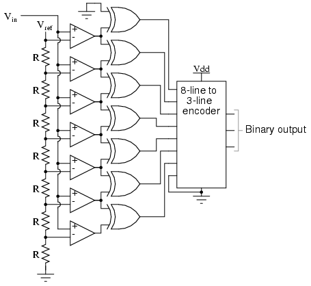
Y, por supuesto, el circuito codificador en sí se puede fabricar a partir de una matriz de diodos, lo que demuestra cuán simple se puede construir este diseño de convertidor:
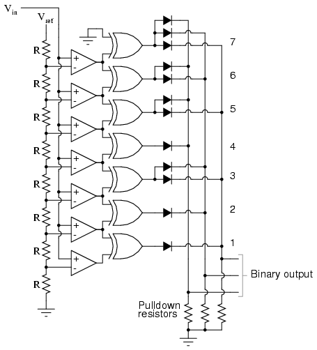
El convertidor flash no sólo es el más simple en términos de teoría operativa, sino que también es la más eficiente de las tecnologías ADC en términos de velocidad, ya que está limitado únicamente en los retrasos de propagación del comparador y de la puerta. Desafortunadamente, es el que requiere más componentes para cualquier número determinado de bits de salida. Este ADC flash de tres bits requiere siete comparadores. Una versión de cuatro bits requeriría 15 comparadores. Con cada bit de salida adicional se duplica el número de comparadores necesarios. Teniendo en cuenta que ocho bits generalmente se considera el mínimo necesario para cualquier ADC práctico (¡se necesitan 255 comparadores!), la metodología flash muestra rápidamente su debilidad.
Una ventaja adicional del convertidor flash, que a menudo se pasa por alto, es su capacidad de producir una salida no lineal. Con resistencias de igual valor en la red divisora de voltaje de referencia, cada conteo binario sucesivo representa la misma cantidad de aumento de señal analógica, proporcionando una respuesta proporcional. Sin embargo, para aplicaciones especiales, los valores de resistencia en la red divisoria pueden no ser iguales. Esto le da al ADC una respuesta personalizada y no lineal a la señal de entrada analógica. Ningún otro diseño de ADC es capaz de otorgar este comportamiento de acondicionamiento de señal con solo unos pocos cambios en el valor de los componentes.
Digital ramp ADC
También conocido como elrampa de escalera, o simplementeencimeraConvertidor A/D, esto también es bastante fácil de entender, pero lamentablemente adolece de varias limitaciones.
La idea básica es conectar la salida de un contador binario de funcionamiento libre a la entrada de un DAC, luego comparar la salida analógica del DAC con la señal de entrada analógica que se va a digitalizar y usar la salida del comparador para indicarle al contador cuándo detener el conteo y reiniciar. El siguiente esquema muestra la idea básica:
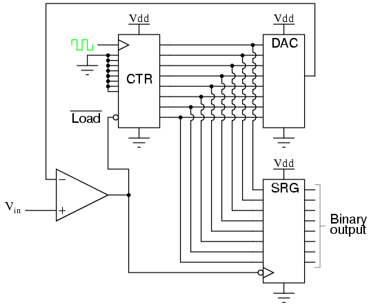
A medida que el contador cuenta con cada pulso de reloj, el DAC genera un voltaje ligeramente más alto (más positivo). El comparador compara este voltaje con el voltaje de entrada. Si el voltaje de entrada es mayor que la salida del DAC, la salida del comparador será alta y el contador continuará contando normalmente. Sin embargo, eventualmente, la salida del DAC excederá el voltaje de entrada, lo que provocará que la salida del comparador baje. Esto hará que sucedan dos cosas: primero, la transición de alto a bajo de la salida del comparador hará que el registro de desplazamiento "cargue" cualquier conteo binario que esté generando el contador, actualizando así la salida del circuito ADC; en segundo lugar, el contador recibirá una señal baja en la entrada LOAD activa-baja, lo que provocará que se reinicie a 00000000 en el siguiente pulso de reloj.
El efecto de este circuito es producir una salida DAC que aumenta hasta cualquier nivel en el que se encuentre la señal de entrada analógica, genera el número binario correspondiente a ese nivel y comienza de nuevo. Trazado en el tiempo, se ve así:
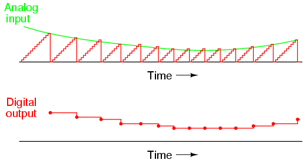
Observe cómo el tiempo entre actualizaciones (nuevos valores de salida digital) cambia dependiendo de qué tan alto sea el voltaje de entrada. Para niveles de señal bajos, las actualizaciones son bastante espaciadas. Para niveles de señal más altos, están más espaciados en el tiempo:
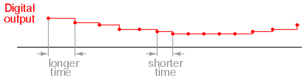
Para muchas aplicaciones ADC, esta variación en la frecuencia de actualización (tiempo de muestreo) no sería aceptable. Esto, y el hecho de que la necesidad del circuito de contar desde 0 al comienzo de cada ciclo de conteo hace que el muestreo de la señal analógica sea relativamente lento, coloca al ADC de rampa digital en desventaja frente a otras estrategias de contador.
Successive approximation ADC
Un método para abordar las deficiencias del ADC de rampa digital es el llamadoaproximación-sucesivaADC. El único cambio en este diseño es un circuito contador muy especial conocido comoregistro de aproximación sucesiva. En lugar de contar en secuencia binaria, este registro cuenta probando todos los valores de bits comenzando con el bit más significativo y terminando en el bit menos significativo. Durante todo el proceso de conteo, el registro monitorea la salida del comparador para ver si el conteo binario es menor o mayor que la entrada de la señal analógica, ajustando los valores de bits en consecuencia. La forma en que cuenta el registro es idéntica al método de "prueba y ajuste" de conversión de decimal a binario, mediante el cual se prueban diferentes valores de bits de MSB a LSB para obtener un número binario que sea igual al número decimal original. La ventaja de esta estrategia de conteo es que los resultados son mucho más rápidos: la salida del DAC converge en la entrada de la señal analógica en pasos mucho mayores que con la secuencia de conteo de 0 a completo de un contador normal.
Sin mostrar el funcionamiento interno del registro de aproximación sucesiva (SAR), el circuito se ve así:
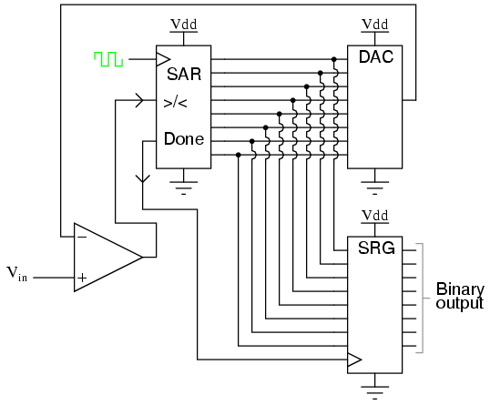
Cabe señalar que el SAR generalmente es capaz de generar el número binario ende serie(un bit a la vez), eliminando así la necesidad de un registro de desplazamiento. Trazado en el tiempo, el funcionamiento de un ADC de aproximación sucesiva se ve así:
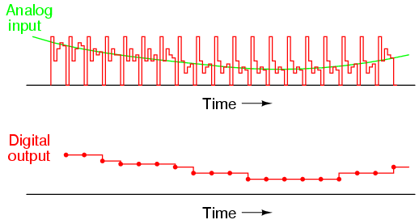
Observe cómo las actualizaciones para este ADC ocurren a intervalos regulares, a diferencia del circuito ADC de rampa digital.
Tracking ADC
Una tercera variación del tema del convertidor basado en DAC es, en mi opinión, la más elegante. En lugar de un contador "ascendente" normal que impulsa el DAC, este circuito utiliza un contador ascendente/descendente. El contador se sincroniza continuamente y la línea de control arriba/abajo es impulsada por la salida del comparador. Entonces, cuando la señal de entrada analógica excede la salida del DAC, el contador entra en el modo de "cuenta ascendente". Cuando la salida del DAC excede la entrada analógica, el contador cambia al modo de "cuenta regresiva". De cualquier manera, la salida DAC siempre cuenta en la dirección correcta parapistala señal de entrada.
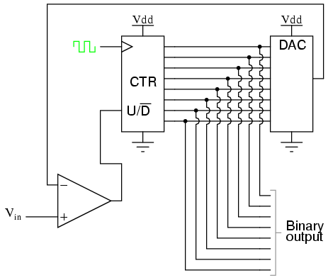
Observe cómo no se necesita ningún registro de desplazamiento para amortiguar el recuento binario al final de un ciclo. Dado que la salida del contador rastrea continuamente la entrada (en lugar de contar para alcanzar la entrada y luego restablecerla a cero), la salida binaria se actualiza legítimamente con cada pulso de reloj.
Una ventaja de este circuito convertidor es la velocidad, ya que el contador nunca tiene que reiniciarse. Tenga en cuenta el comportamiento de este circuito:
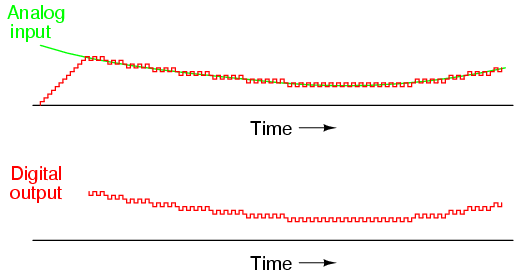
Tenga en cuenta el tiempo de actualización mucho más rápido que cualquiera de los otros circuitos ADC de "conteo". También observe cómo al comienzo del gráfico, donde el contador tenía que "alcanzar" la señal analógica, la tasa de cambio de la salida era idéntica a la del primer ADC de conteo. Además, sin un registro de desplazamiento en este circuito, la salida binaria en realidad aumentaría en lugar de saltar de cero a un conteo preciso como lo hizo con el contador y los sucesivos circuitos ADC de aproximación.
Quizás el mayor inconveniente de este diseño de ADC es el hecho de que la salida binaria nunca es estable: siempre cambia entre conteos con cada pulso de reloj, incluso con una señal de entrada analógica perfectamente estable. Este fenómeno se conoce informalmente comopoco burbuja, y puede resultar problemático en algunos sistemas digitales.
Sin embargo, esta tendencia puede superarse mediante el uso creativo de un registro de desplazamiento. Por ejemplo, la salida del contador se puede bloquear a través de un registro de desplazamiento de entrada/salida en paralelo sólo cuando la salida cambia en dos o más pasos. Construir un circuito para detectar dos o más conteos sucesivos en la misma dirección requiere un poco de ingenio, pero vale la pena el esfuerzo.
Slope (integrating) ADC
Hasta ahora, solo hemos podido escapar del gran volumen de componentes en el convertidor flash usando un DAC como parte de nuestro circuito ADC. Sin embargo, esta no es nuestra única opción. Es posible evitar el uso de un DAC si lo sustituimos por un circuito de rampa analógico y un contador digital con sincronización precisa.
Esta es la idea básica detrás del llamadopendiente única, ointegrandoADC. En lugar de usar un DAC con una salida en rampa, usamos un circuito de amplificador operacional llamadointegradorpara generar una forma de onda en diente de sierra que luego se compara con la entrada analógica mediante un comparador. El tiempo que tarda la forma de onda en diente de sierra en exceder el nivel de voltaje de la señal de entrada se mide mediante un contador digital sincronizado con una onda cuadrada de frecuencia precisa (generalmente de un oscilador de cristal). El diagrama esquemático básico se muestra aquí:
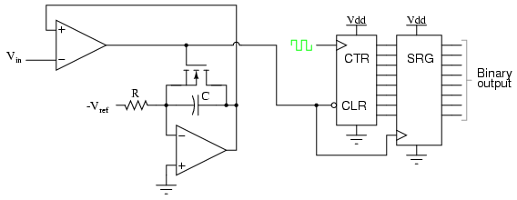
El esquema del transistor de descarga de capacitor IGFET que se muestra aquí está un poco simplificado. En realidad, lo más probable es que se deba conectar un circuito de enclavamiento sincronizado con la señal del reloj a la puerta IGFET para garantizar la descarga completa del capacitor cuando la salida del comparador sube. La idea básica, sin embargo, es evidente en este diagrama. Cuando la salida del comparador es baja (voltaje de entrada mayor que la salida del integrador), se permite que el integrador cargue el capacitor de forma lineal. Mientras tanto, el contador cuenta a una velocidad fijada por la frecuencia del reloj de precisión. El tiempo que tarda el condensador en cargarse hasta el mismo nivel de voltaje que la entrada depende del nivel de la señal de entrada y de la combinación de -Vref, R y C. Cuando el capacitor alcanza ese nivel de voltaje, la salida del comparador se vuelve alta, cargando la salida del contador en el registro de desplazamiento para una salida final. El IGFET se activa "encendido" por la alta salida del comparador, descargando el condensador de nuevo a cero voltios. Cuando el voltaje de salida del integrador cae a cero, la salida del comparador vuelve a un estado bajo, borrando el contador y permitiendo que el integrador aumente el voltaje nuevamente.
Este circuito ADC se comporta de manera muy similar al ADC de rampa digital, excepto que el voltaje de referencia del comparador es una forma de onda de diente de sierra suave en lugar de un "escalón":
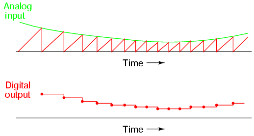
El ADC de pendiente única sufre todas las desventajas del ADC de rampa digital, con el inconveniente añadido dederiva de calibración. La correspondencia precisa de la salida de este ADC con su entrada depende de que la pendiente de voltaje del integrador coincida con la velocidad de conteo del contador (la frecuencia del reloj). Con el ADC de rampa digital, la frecuencia del reloj no tuvo ningún efecto en la precisión de la conversión, solo en el tiempo de actualización. En este circuito, dado que la tasa de integración y la tasa de conteo son independientes entre sí, la variación entre las dos es inevitable a medida que envejece y resultará en una pérdida de precisión. Lo único bueno que se puede decir de este circuito es que evita el uso de un DAC, lo que reduce la complejidad del circuito.
Una respuesta a este dilema de la desviación de la calibración se encuentra en una variación de diseño llamadadoble pendienteconvertidor. En el convertidor de doble pendiente, un circuito integrador se activa de manera positiva y negativa en ciclos alternos para bajar y luego subir, en lugar de restablecerse a 0 voltios al final de cada ciclo. En una dirección de rampa, el integrador es impulsado por la señal de entrada analógica positiva (produciendo una tasa variable negativa de cambio de voltaje de salida, o salidapendiente) durante un período de tiempo fijo, medido por un contador con un reloj de frecuencia de precisión. Luego, en la otra dirección, con un voltaje de referencia fijo (que produce una tasa fija de cambio de voltaje de salida) con el tiempo medido por el mismo contador. El contador deja de contar cuando la salida del integrador alcanza el mismo voltaje que tenía cuando inició la parte del ciclo de tiempo fijo. La cantidad de tiempo que tarda el capacitor del integrador en descargarse nuevamente a su voltaje de salida original, medido por la magnitud acumulada por el contador, se convierte en la salida digital del circuito ADC.
El método de doble pendiente se puede considerar de manera análoga en términos de un resorte giratorio como el que se usa en un mecanismo de reloj mecánico. Imaginemos que estábamos construyendo un mecanismo para medir la velocidad de rotación de un eje. Por lo tanto, la velocidad del eje es nuestra "señal de entrada" que este dispositivo medirá. El ciclo de medición comienza con el resorte en estado relajado. Luego, el eje giratorio (señal de entrada) hace girar o "enrolla" el resorte durante un período de tiempo fijo. Esto coloca al resorte en una cierta cantidad de tensión proporcional a la velocidad del eje: una mayor velocidad del eje corresponde a una velocidad de enrollado más rápida. y se acumuló una mayor cantidad de tensión de resorte durante ese período de tiempo. Después de eso, el resorte se desacopla del eje y se le permite desenrollarse a un ritmo fijo; el tiempo necesario para que se desenrolle y vuelva a un estado relajado se mide mediante un dispositivo temporizador. la cantidad detiempoque tarda el resorte en desenrollarse a esa tasa fija será directamente proporcional a lavelocidadal que se enrolló (magnitud de la señal de entrada) durante la parte de tiempo fijo del ciclo.
Esta técnica de conversión de analógico a digital evita el problema de deriva de calibración del ADC de pendiente única porque tanto el coeficiente de integración del integrador (o "ganancia") como la tasa de velocidad del contador están vigentes durante todas las partes del ciclo de "bobinado" y "desenrollado". Si la velocidad del reloj del contador aumentara repentinamente, esto acortaría el período de tiempo fijo en el que el integrador "termina" (lo que resulta en un menor voltaje acumulado por el integrador), pero también significaría que contaría más rápido durante el período de tiempo en el que al integrador se le permitió "desactivarse" a una velocidad fija. La proporción en que el contador cuenta más rápido será la misma proporción en la que el voltaje acumulado del integrador disminuye antes del cambio de velocidad del reloj. Por lo tanto, el error de velocidad del reloj se cancelaría y la salida digital sería exactamente la que debería ser.
Otra ventaja importante de este método es que la señal de entrada se promedia a medida que impulsa el integrador durante la parte del ciclo de tiempo fijo. Cualquier cambio en la señal analógica durante ese período de tiempo tiene un efecto acumulativo en la salida digital al final de ese ciclo. Otras estrategias de ADC simplemente "capturan" el nivel de la señal analógica en un único momento en cada ciclo. Si la señal analógica es "ruidosa" (contiene niveles significativos de picos/caídas de voltaje espurios), una de las otras tecnologías de convertidor ADC puede ocasionalmente convertir un pico o caída porque captura la señal repetidamente en un solo momento. Por otro lado, un ADC de doble pendiente promedia todos los picos y caídas dentro del período de integración, proporcionando así una salida con mayor inmunidad al ruido. Los ADC de doble pendiente se utilizan en aplicaciones que exigen alta precisión.
Delta-Sigma (ΔΣ) ADC
Una de las tecnologías ADC más avanzadas es la llamada delta-sigma o ΔΣ (usando la notación de letras griegas adecuada). En matemáticas y física, la letra griega mayúscula delta (Δ) representadiferencia or cambiar, mientras que la letra mayúscula sigma (Σ) representasuma: la suma de varios términos juntos. A veces, se hace referencia a este convertidor con las mismas letras griegas en orden inverso: sigma-delta o ΣΔ.
En un convertidor ΔΣ, la señal de voltaje de entrada analógica se conecta a la entrada de un integrador, lo que produce una tasa de cambio de voltaje, o pendiente, en la salida correspondiente a la magnitud de entrada. Luego, un comparador compara este voltaje de rampa con el potencial de tierra (0 voltios). El comparador actúa como una especie de ADC de 1 bit, produciendo 1 bit de salida ("alta" o "baja") dependiendo de si la salida del integrador es positiva o negativa. Luego, la salida del comparador se bloquea a través de un flip-flop tipo D sincronizado a alta frecuencia, yretroalimentadoa otro canal de entrada en el integrador, para conducir el integrador en la dirección de una salida de 0 voltios. El circuito básico se ve así:
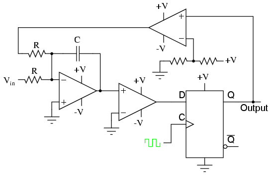
El amplificador operacional más a la izquierda es el integrador (sumador). El siguiente amplificador operacional al que se alimenta el integrador es el comparador, o ADC de 1 bit. Luego viene el flip-flop tipo D, que bloquea la salida del comparador en cada pulso de reloj, enviando una señal "alta" o "baja" al siguiente comparador en la parte superior del circuito. Este comparador final es necesario para convertir el voltaje de salida de nivel lógico de polaridad única de 0 V/5 V del flip-flop en una señal de voltaje de + V/-V para ser devuelta al integrador.
Si la salida del integrador es positiva, el primer comparador emitirá una señal "alta" a la entrada D del flip-flop. En el siguiente pulso de reloj, esta señal "alta" saldrá de la línea Q a la entrada no inversora del último comparador. Este último comparador, al ver un voltaje de entrada mayor que el voltaje umbral de 1/2 +V, se satura en dirección positiva, enviando una señal +V completa a la otra entrada del integrador. Esta señal de retroalimentación +V tiende a impulsar la salida del integrador en una dirección negativa. Si ese voltaje de salida alguna vez se vuelve negativo, el circuito de retroalimentación enviará una señal correctiva (-V) a la entrada superior del integrador para impulsarlo en una dirección positiva. Éste es el concepto delta-sigma en acción: el primer comparador detecta unadiferencia(Δ) entre la salida del integrador y cero voltios. el integradorsumas(Σ) la salida del comparador con la señal de entrada analógica.
Funcionalmente, esto da como resultado un flujo en serie de bits emitidos por el flip-flop. Si la entrada analógica es de cero voltios, el integrador no tendrá tendencia a aumentar ni positiva ni negativamente, excepto en respuesta al voltaje de retroalimentación. En este escenario, la salida del flip-flop oscilará continuamente entre "alta" y "baja", mientras el sistema de retroalimentación "busca" hacia adelante y hacia atrás, tratando de mantener la salida del integrador a cero voltios:
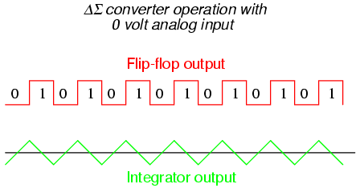
Sin embargo, si aplicamos un voltaje de entrada analógico negativo, el integrador tenderá a aumentar su salida en dirección positiva. La retroalimentación sólo puede aumentar la rampa del integrador mediante un voltaje fijo durante un tiempo fijo, por lo que la salida del flujo de bits del flip-flop no será exactamente la misma:
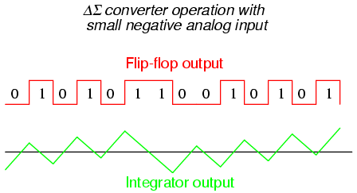
Al aplicar una señal de entrada analógica más grande (negativa) al integrador, forzamos su salida a una rampa más pronunciada en la dirección positiva. Por lo tanto, el sistema de retroalimentación tiene que generar más unos que antes para que la salida del integrador vuelva a cero voltios:
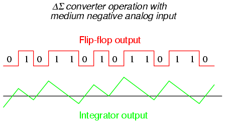
A medida que la señal de entrada analógica aumenta en magnitud, también aumenta la aparición de unos en la salida digital del flip-flop:
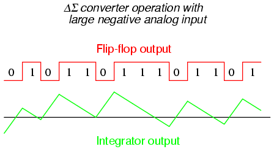
A partir de este circuito se obtiene una salida de número binario paralelo promediando el flujo en serie de bits. Por ejemplo, se podría diseñar un circuito contador para recopilar el número total de unos emitidos por el flip-flop en un número determinado de pulsos de reloj. Este recuento sería entonces indicativo del voltaje de entrada analógica.
Existen variaciones sobre este tema, que emplean múltiples etapas integradoras y/o circuitos comparadores que generan más de 1 bit, pero un concepto común a todos los convertidores ΔΣ es el desobremuestreo. El sobremuestreo se produce cuando un ADC (en este caso, un ADC de 1 bit) toma varias muestras de una señal analógica y esas muestras digitalizadas se promedian. El resultado final es un aumento efectivo en el número de bits resueltos de la señal. En otras palabras, un ADC de 1 bit sobremuestreado puede hacer el mismo trabajo que un ADC de 8 bits con muestreo único, aunque a una velocidad más lenta.
Practical considerations of ADC circuits
Quizás la consideración más importante de un ADC es suresolución. La resolución es el número de bits binarios emitidos por el convertidor. Debido a que los circuitos ADC toman una señal analógica, que es continuamente variable, y la resuelven en uno de muchos pasos discretos, es importante saber cuántos de estos pasos hay en total.
Por ejemplo, un ADC con una salida de 10 bits puede representar hasta 1024 (210) condiciones únicas de medición de señales. En el rango de medición de 0% a 100%, el convertidor generará exactamente 1024 números binarios únicos (de 0000000000 a 1111111111, inclusive). Un ADC de 11 bits tendrá el doble de estados en su salida (2048, o 211), que representa el doble de condiciones únicas de medición de señal entre 0% y 100%.
La resolución es muy importante en los sistemas de adquisición de datos (circuitos diseñados para interpretar y registrar mediciones físicas en formato electrónico). Supongamos que estamos midiendo la altura del agua en un tanque de almacenamiento de 40 pies de altura usando un instrumento con un ADC de 10 bits. 0 pies de agua en el tanque corresponden al 0% de la medición, mientras que 40 pies de agua en el tanque corresponden al 100% de la medición. Debido a que el ADC está fijado en 10 bits de salida de datos binarios, interpretará cualquier nivel de tanque dado como uno de 1024 estados posibles. Para determinar cuánto nivel físico de agua estará representado en cadapasodel ADC, necesitamos dividir los 40 pies de alcance de medición por el número de pasos en el rango de posibilidades de 0 a 1024, que es 1023 (uno menos que 1024). Haciendo esto obtenemos una cifra de 0,039101 pies por paso. Esto equivale a 0,46921 pulgadas por paso, un poco menos de media pulgada de nivel de agua representado por cada recuento binario del ADC.
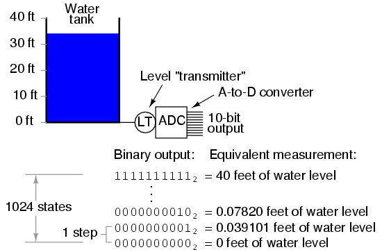
Este valor de paso de 0,039101 pies (0,46921 pulgadas) representa la cantidad más pequeña de cambio de nivel del tanque detectable por el instrumento. Es cierto que esta es una cantidad pequeña, menos del 0,1% del alcance total de la medición de 40 pies. Sin embargo, para algunas aplicaciones puede que no sea lo suficientemente bueno. Supongamos que necesitáramos que este instrumento pudiera indicar cambios de nivel del tanque de hasta un décimo de pulgada. Para lograr este grado de resolución y aún mantener un alcance de medición de 40 pies, necesitaríamos un instrumento con más de diez bits ADC.
Para determinar cuántos bits ADC son necesarios, primero debemos determinar cuántos pasos de 1/10 de pulgada hay en 40 pies. La respuesta a esto es 40/(0,1/12), o 4800 pasos de 1/10 de pulgada en 40 pies. Por tanto, necesitamos suficientes bits para proporcionar al menos 4800 pasos discretos en una secuencia de conteo binaria. 10 bits nos dieron 1023 pasos, y lo supimos calculando 2 elevado a 10 (210= 1024) y luego restar uno. Siguiendo el mismo procedimiento matemático, 211-1 = 2047, 212-1 = 4095, and 213-1 = 8191. 12 bits falls shy of the amount needed for 4800 steps, while 13 bits is more than enough. Therefore, we need an instrument with at least 13 bits of resolution.
Otra consideración importante de los circuitos ADC es sufrecuencia de muestreo, otasa de conversión. Esta es simplemente la velocidad a la que el convertidor genera un nuevo número binario. Al igual que la resolución, esta consideración está vinculada a la aplicación específica de la ADC. Si el convertidor se utiliza para medir señales que cambian lentamente, como el nivel en un tanque de almacenamiento de agua, probablemente podría tener una frecuencia de muestreo muy lenta y aún así funcionar adecuadamente. Por el contrario, si se utiliza para digitalizar una señal de frecuencia de audio que realiza ciclos de varios miles de veces por segundo, el convertidor debe ser considerablemente más rápido.
Considere la siguiente ilustración de la tasa de conversión del ADC frente al tipo de señal, típica de un ADC de aproximación sucesiva con intervalos de muestreo regulares:
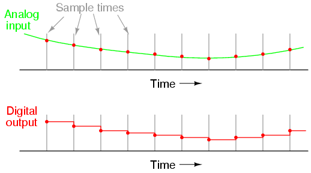
Aquí, para esta señal que cambia lentamente, la frecuencia de muestreo es más que adecuada para capturar su tendencia general. Pero consideraesteejemplo con el mismo tiempo de muestra:
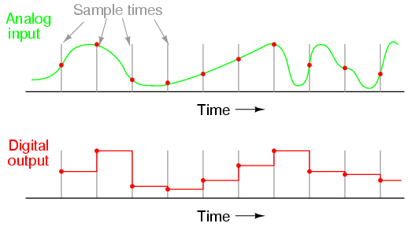
Cuando el período de muestreo es demasiado largo (demasiado lento), se perderán detalles sustanciales de la señal analógica. Observe cómo, especialmente en las últimas partes de la señal analógica, la salida digital no logra reproducir la forma real. Incluso en la primera sección de la forma de onda analógica, la reproducción digital se desvía sustancialmente de la forma real de la onda.
Es imperativo que el tiempo de muestreo de un ADC sea lo suficientemente rápido para capturar cambios esenciales en la forma de onda analógica. En terminología de adquisición de datos, la forma de onda de mayor frecuencia que un ADC puede capturar teóricamente es la llamadaFrecuencia de Nyquist, igual a la mitad de la frecuencia de muestreo del ADC. Por lo tanto, si un circuito ADC tiene una frecuencia de muestreo de 5000 Hz, la forma de onda de mayor frecuencia que podrá resolver con éxito será la frecuencia de Nyquist de 2500 Hz.
Si un ADC se somete a una señal de entrada analógica cuya frecuencia excede la frecuencia de Nyquist para ese ADC, el convertidor emitirá una señal digitalizada de frecuencia falsamente baja. Este fenómeno se conoce comoalias. Observe la siguiente ilustración para ver cómo se produce el alias:
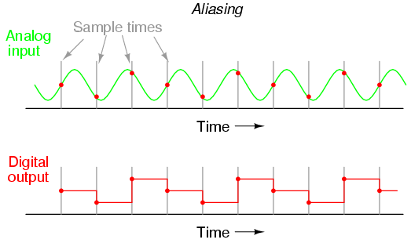
Observe cómo el período de la forma de onda de salida es mucho más largo (más lento) que el de la forma de onda de entrada, y cómo las dos formas de onda ni siquiera son similares:
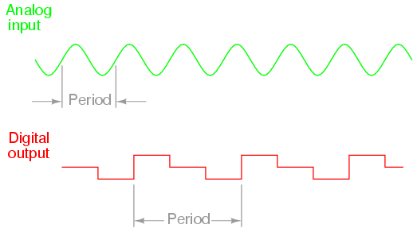
Debe entenderse que la frecuencia de Nyquist es unaabsolutolímite de frecuencia máxima para un ADC, y no representa el límite más altoprácticofrecuencia medible. Para estar seguro, no se debe esperar que un ADC resuelva con éxito cualquier frecuencia mayor que un quinto o un décimo de su frecuencia de muestra.
Un medio práctico para evitar el aliasing es colocar un filtro de paso bajo antes de la entrada del ADC, para bloquear cualquier frecuencia de señal mayor que el límite práctico. De esta manera, se evitará que el circuito ADC vea frecuencias excesivas y, por lo tanto, no intentará digitalizarlas. En general, se considera mejor que dichas frecuencias no se conviertan que tener un "alias" y aparecer en la salida como señales falsas.
Otra medida más del rendimiento del ADC es algo llamadopaso de recuperación. Esta es una medida de la rapidez con la que un ADC cambia su salida para adaptarse a un cambio grande y repentino en la entrada analógica. Especialmente en algunas tecnologías de conversión, la recuperación por pasos es una limitación importante. Un ejemplo es el convertidor de seguimiento, que normalmente tiene un período de actualización rápido pero un paso de recuperación desproporcionadamente lento.
Un ADC ideal tiene una gran cantidad de bits para una resolución muy fina, muestra a velocidades ultrarrápidas y se recupera de los pasos al instante. Desafortunadamente, tampoco existe en el mundo real. Por supuesto, cualquiera de estas características se puede mejorar mediante una complejidad adicional del circuito, ya sea en términos de un mayor número de componentes y/o diseños de circuitos especiales hechos para funcionar a velocidades de reloj más altas. Sin embargo, las diferentes tecnologías ADC tienen diferentes puntos fuertes. Aquí te dejamos un resumen de ellos clasificados de mejor a peor:
Relación resolución/complejidad:
Integración de pendiente simple, integración de pendiente doble, contador, seguimiento, aproximación sucesiva, flash.
Velocidad:
Flash, seguimiento, aproximación sucesiva, integración y contador de pendiente única, integración de pendiente doble.
Paso de recuperación:
Flash, aproximación sucesiva, integración y contador de pendiente única, integración de pendiente doble, seguimiento.
Tenga en cuenta que las clasificaciones de estas diferentes tecnologías ADC dependen de otros factores. Por ejemplo, la forma en que un ADC califica la recuperación de pasos depende de la naturaleza del cambio de paso. Un ADC de seguimiento es igualmente lento para responder a todos los cambios de paso, mientras que un ADC de pendiente única o de contador registrará un cambio de paso de alto a bajo más rápido que un cambio de paso de bajo a alto. Los ADC de aproximación sucesiva son casi igualmente rápidos a la hora de resolver cualquier señal analógica, pero un ADC de seguimiento superará consistentemente a un ADC de aproximación sucesiva si la señal cambia más lentamente que un paso de resolución por pulso de reloj. Clasifiqué que los convertidores integradores tienen una mayor relación resolución/complejidad que los convertidores contadores, pero esto supone que los circuitos integradores analógicos de precisión son menos complejos de diseñar y fabricar que los DAC de precisión requeridos dentro de los convertidores basados en contadores. Es posible que otros no estén de acuerdo con esta suposición.
Lecciones en circuitos eléctricoscopyright (C) 2000-2023 Tony R. Kuphaldt, según los términos y condiciones delCC BY License.